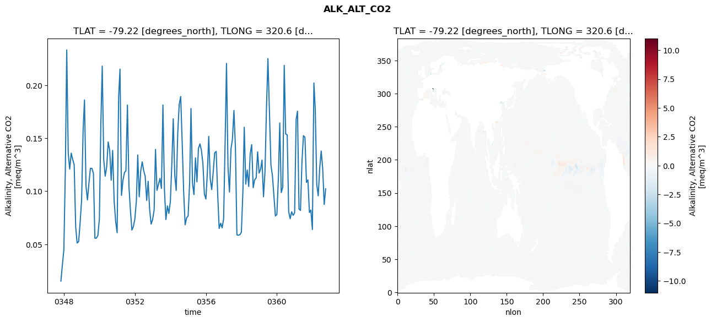
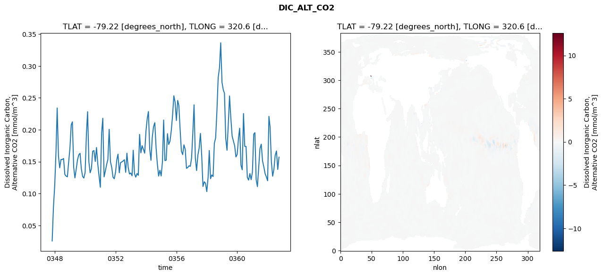
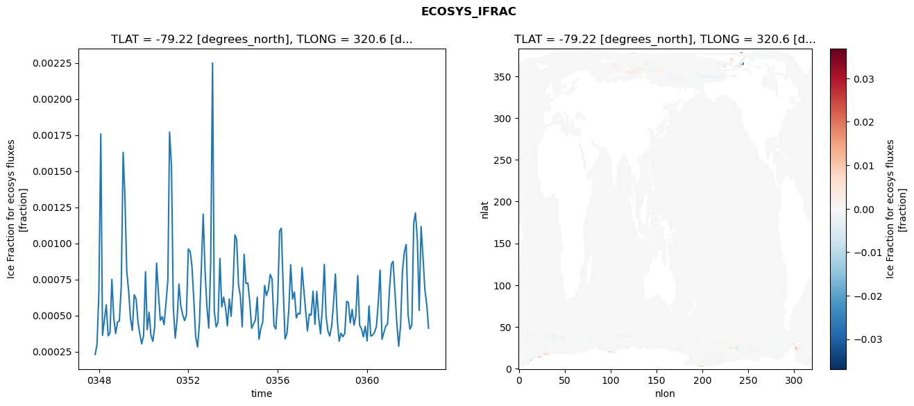
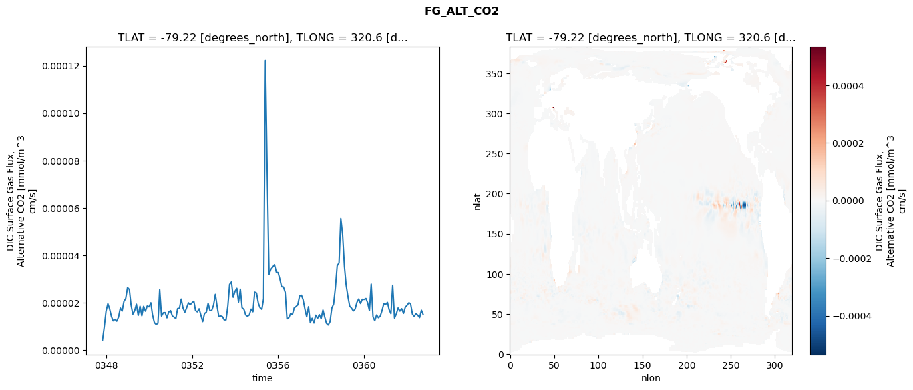

glb-dor_North_Atlantic_basin_011_1999-10-01_00047#
Simulation details#
Case: smyle.cdr-atlas-v0.glb-dor_North_Atlantic_basin_011_1999-10-01_00047.001
Basin: North_Atlantic_basin
Polygon: 11.0
Start date: 1999-10
Show code cell source Hide code cell source
import xarray as xr
import matplotlib.pyplot as plt
Show code cell source Hide code cell source
zarr_store = "/path/to/zarr/store"
# Parameters
zarr_store = "/global/cfs/projectdirs/m4746/Projects/Ocean-CDR-Atlas-v0/data/validation/smyle.cdr-atlas-v0.glb-dor_North_Atlantic_basin_011_1999-10-01_00047.001.validation.zarr"
Show code cell source Hide code cell source
%%time
ds_o = xr.open_zarr(zarr_store).compute()
ds_o
CPU times: user 602 ms, sys: 542 ms, total: 1.14 s
Wall time: 1.37 s
<xarray.Dataset> Size: 2MB
Dimensions: (nlat: 384, nlon: 320, time: 180)
Coordinates:
TLAT float64 8B -79.22
TLONG float64 8B 320.6
ULAT float64 8B -78.95
ULONG float64 8B 321.1
* time (time) object 1kB 0347-11-01 00:00:00 ... 0362-10-01 0...
z_t float32 4B 500.0
Dimensions without coordinates: nlat, nlon
Data variables:
ALK_ALT_CO2_diff (nlat, nlon) float32 492kB nan nan nan ... nan nan nan
ALK_ALT_CO2_rmse (time) float64 1kB 0.01523 0.03035 ... 0.08751 0.1023
DIC_ALT_CO2_diff (nlat, nlon) float32 492kB nan nan nan ... nan nan nan
DIC_ALT_CO2_rmse (time) float64 1kB 0.02563 0.07827 ... 0.1377 0.157
ECOSYS_IFRAC_diff (nlat, nlon) float32 492kB nan nan nan ... nan nan nan
ECOSYS_IFRAC_rmse (time) float64 1kB 0.0002302 0.0003006 ... 0.0004125
FG_ALT_CO2_diff (nlat, nlon) float32 492kB nan nan nan ... nan nan nan
FG_ALT_CO2_rmse (time) float64 1kB 4.003e-06 9.572e-06 ... 1.491e-05xarray.Dataset
- nlat: 384
- nlon: 320
- time: 180
- TLAT()float64-79.22
- long_name :
- array of t-grid latitudes
- units :
- degrees_north
array(-79.22052261)
- TLONG()float64320.6
- long_name :
- array of t-grid longitudes
- units :
- degrees_east
array(320.56250892)
- ULAT()float64-78.95
- long_name :
- array of u-grid latitudes
- units :
- degrees_north
array(-78.95289509)
- ULONG()float64321.1
- long_name :
- array of u-grid longitudes
- units :
- degrees_east
array(321.12500894)
- time(time)object0347-11-01 00:00:00 ... 0362-10-...
- bounds :
- time_bound
- long_name :
- time
array([cftime.DatetimeNoLeap(347, 11, 1, 0, 0, 0, 0, has_year_zero=True), cftime.DatetimeNoLeap(347, 12, 1, 0, 0, 0, 0, has_year_zero=True), cftime.DatetimeNoLeap(348, 1, 1, 0, 0, 0, 0, has_year_zero=True), cftime.DatetimeNoLeap(348, 2, 1, 0, 0, 0, 0, has_year_zero=True), cftime.DatetimeNoLeap(348, 3, 1, 0, 0, 0, 0, has_year_zero=True), cftime.DatetimeNoLeap(348, 4, 1, 0, 0, 0, 0, has_year_zero=True), cftime.DatetimeNoLeap(348, 5, 1, 0, 0, 0, 0, has_year_zero=True), cftime.DatetimeNoLeap(348, 6, 1, 0, 0, 0, 0, has_year_zero=True), cftime.DatetimeNoLeap(348, 7, 1, 0, 0, 0, 0, has_year_zero=True), cftime.DatetimeNoLeap(348, 8, 1, 0, 0, 0, 0, has_year_zero=True), cftime.DatetimeNoLeap(348, 9, 1, 0, 0, 0, 0, has_year_zero=True), cftime.DatetimeNoLeap(348, 10, 1, 0, 0, 0, 0, has_year_zero=True), cftime.DatetimeNoLeap(348, 11, 1, 0, 0, 0, 0, has_year_zero=True), cftime.DatetimeNoLeap(348, 12, 1, 0, 0, 0, 0, has_year_zero=True), cftime.DatetimeNoLeap(349, 1, 1, 0, 0, 0, 0, has_year_zero=True), cftime.DatetimeNoLeap(349, 2, 1, 0, 0, 0, 0, has_year_zero=True), cftime.DatetimeNoLeap(349, 3, 1, 0, 0, 0, 0, has_year_zero=True), cftime.DatetimeNoLeap(349, 4, 1, 0, 0, 0, 0, has_year_zero=True), cftime.DatetimeNoLeap(349, 5, 1, 0, 0, 0, 0, has_year_zero=True), cftime.DatetimeNoLeap(349, 6, 1, 0, 0, 0, 0, has_year_zero=True), cftime.DatetimeNoLeap(349, 7, 1, 0, 0, 0, 0, has_year_zero=True), cftime.DatetimeNoLeap(349, 8, 1, 0, 0, 0, 0, has_year_zero=True), cftime.DatetimeNoLeap(349, 9, 1, 0, 0, 0, 0, has_year_zero=True), cftime.DatetimeNoLeap(349, 10, 1, 0, 0, 0, 0, has_year_zero=True), cftime.DatetimeNoLeap(349, 11, 1, 0, 0, 0, 0, has_year_zero=True), cftime.DatetimeNoLeap(349, 12, 1, 0, 0, 0, 0, has_year_zero=True), cftime.DatetimeNoLeap(350, 1, 1, 0, 0, 0, 0, has_year_zero=True), cftime.DatetimeNoLeap(350, 2, 1, 0, 0, 0, 0, has_year_zero=True), cftime.DatetimeNoLeap(350, 3, 1, 0, 0, 0, 0, has_year_zero=True), cftime.DatetimeNoLeap(350, 4, 1, 0, 0, 0, 0, has_year_zero=True), cftime.DatetimeNoLeap(350, 5, 1, 0, 0, 0, 0, has_year_zero=True), cftime.DatetimeNoLeap(350, 6, 1, 0, 0, 0, 0, has_year_zero=True), cftime.DatetimeNoLeap(350, 7, 1, 0, 0, 0, 0, has_year_zero=True), cftime.DatetimeNoLeap(350, 8, 1, 0, 0, 0, 0, has_year_zero=True), cftime.DatetimeNoLeap(350, 9, 1, 0, 0, 0, 0, has_year_zero=True), cftime.DatetimeNoLeap(350, 10, 1, 0, 0, 0, 0, has_year_zero=True), cftime.DatetimeNoLeap(350, 11, 1, 0, 0, 0, 0, has_year_zero=True), cftime.DatetimeNoLeap(350, 12, 1, 0, 0, 0, 0, has_year_zero=True), cftime.DatetimeNoLeap(351, 1, 1, 0, 0, 0, 0, has_year_zero=True), cftime.DatetimeNoLeap(351, 2, 1, 0, 0, 0, 0, has_year_zero=True), cftime.DatetimeNoLeap(351, 3, 1, 0, 0, 0, 0, has_year_zero=True), cftime.DatetimeNoLeap(351, 4, 1, 0, 0, 0, 0, has_year_zero=True), cftime.DatetimeNoLeap(351, 5, 1, 0, 0, 0, 0, has_year_zero=True), cftime.DatetimeNoLeap(351, 6, 1, 0, 0, 0, 0, has_year_zero=True), cftime.DatetimeNoLeap(351, 7, 1, 0, 0, 0, 0, has_year_zero=True), cftime.DatetimeNoLeap(351, 8, 1, 0, 0, 0, 0, has_year_zero=True), cftime.DatetimeNoLeap(351, 9, 1, 0, 0, 0, 0, has_year_zero=True), cftime.DatetimeNoLeap(351, 10, 1, 0, 0, 0, 0, has_year_zero=True), cftime.DatetimeNoLeap(351, 11, 1, 0, 0, 0, 0, has_year_zero=True), cftime.DatetimeNoLeap(351, 12, 1, 0, 0, 0, 0, has_year_zero=True), cftime.DatetimeNoLeap(352, 1, 1, 0, 0, 0, 0, has_year_zero=True), cftime.DatetimeNoLeap(352, 2, 1, 0, 0, 0, 0, has_year_zero=True), cftime.DatetimeNoLeap(352, 3, 1, 0, 0, 0, 0, has_year_zero=True), cftime.DatetimeNoLeap(352, 4, 1, 0, 0, 0, 0, has_year_zero=True), cftime.DatetimeNoLeap(352, 5, 1, 0, 0, 0, 0, has_year_zero=True), cftime.DatetimeNoLeap(352, 6, 1, 0, 0, 0, 0, has_year_zero=True), cftime.DatetimeNoLeap(352, 7, 1, 0, 0, 0, 0, has_year_zero=True), cftime.DatetimeNoLeap(352, 8, 1, 0, 0, 0, 0, has_year_zero=True), cftime.DatetimeNoLeap(352, 9, 1, 0, 0, 0, 0, has_year_zero=True), cftime.DatetimeNoLeap(352, 10, 1, 0, 0, 0, 0, has_year_zero=True), cftime.DatetimeNoLeap(352, 11, 1, 0, 0, 0, 0, has_year_zero=True), cftime.DatetimeNoLeap(352, 12, 1, 0, 0, 0, 0, has_year_zero=True), cftime.DatetimeNoLeap(353, 1, 1, 0, 0, 0, 0, has_year_zero=True), cftime.DatetimeNoLeap(353, 2, 1, 0, 0, 0, 0, has_year_zero=True), cftime.DatetimeNoLeap(353, 3, 1, 0, 0, 0, 0, has_year_zero=True), cftime.DatetimeNoLeap(353, 4, 1, 0, 0, 0, 0, has_year_zero=True), cftime.DatetimeNoLeap(353, 5, 1, 0, 0, 0, 0, has_year_zero=True), cftime.DatetimeNoLeap(353, 6, 1, 0, 0, 0, 0, has_year_zero=True), cftime.DatetimeNoLeap(353, 7, 1, 0, 0, 0, 0, has_year_zero=True), cftime.DatetimeNoLeap(353, 8, 1, 0, 0, 0, 0, has_year_zero=True), cftime.DatetimeNoLeap(353, 9, 1, 0, 0, 0, 0, has_year_zero=True), cftime.DatetimeNoLeap(353, 10, 1, 0, 0, 0, 0, has_year_zero=True), cftime.DatetimeNoLeap(353, 11, 1, 0, 0, 0, 0, has_year_zero=True), cftime.DatetimeNoLeap(353, 12, 1, 0, 0, 0, 0, has_year_zero=True), cftime.DatetimeNoLeap(354, 1, 1, 0, 0, 0, 0, has_year_zero=True), cftime.DatetimeNoLeap(354, 2, 1, 0, 0, 0, 0, has_year_zero=True), cftime.DatetimeNoLeap(354, 3, 1, 0, 0, 0, 0, has_year_zero=True), cftime.DatetimeNoLeap(354, 4, 1, 0, 0, 0, 0, has_year_zero=True), cftime.DatetimeNoLeap(354, 5, 1, 0, 0, 0, 0, has_year_zero=True), cftime.DatetimeNoLeap(354, 6, 1, 0, 0, 0, 0, has_year_zero=True), cftime.DatetimeNoLeap(354, 7, 1, 0, 0, 0, 0, has_year_zero=True), cftime.DatetimeNoLeap(354, 8, 1, 0, 0, 0, 0, has_year_zero=True), cftime.DatetimeNoLeap(354, 9, 1, 0, 0, 0, 0, has_year_zero=True), cftime.DatetimeNoLeap(354, 10, 1, 0, 0, 0, 0, has_year_zero=True), cftime.DatetimeNoLeap(354, 11, 1, 0, 0, 0, 0, has_year_zero=True), cftime.DatetimeNoLeap(354, 12, 1, 0, 0, 0, 0, has_year_zero=True), cftime.DatetimeNoLeap(355, 1, 1, 0, 0, 0, 0, has_year_zero=True), cftime.DatetimeNoLeap(355, 2, 1, 0, 0, 0, 0, has_year_zero=True), cftime.DatetimeNoLeap(355, 3, 1, 0, 0, 0, 0, has_year_zero=True), cftime.DatetimeNoLeap(355, 4, 1, 0, 0, 0, 0, has_year_zero=True), cftime.DatetimeNoLeap(355, 5, 1, 0, 0, 0, 0, has_year_zero=True), cftime.DatetimeNoLeap(355, 6, 1, 0, 0, 0, 0, has_year_zero=True), cftime.DatetimeNoLeap(355, 7, 1, 0, 0, 0, 0, has_year_zero=True), cftime.DatetimeNoLeap(355, 8, 1, 0, 0, 0, 0, has_year_zero=True), cftime.DatetimeNoLeap(355, 9, 1, 0, 0, 0, 0, has_year_zero=True), cftime.DatetimeNoLeap(355, 10, 1, 0, 0, 0, 0, has_year_zero=True), cftime.DatetimeNoLeap(355, 11, 1, 0, 0, 0, 0, has_year_zero=True), cftime.DatetimeNoLeap(355, 12, 1, 0, 0, 0, 0, has_year_zero=True), cftime.DatetimeNoLeap(356, 1, 1, 0, 0, 0, 0, has_year_zero=True), cftime.DatetimeNoLeap(356, 2, 1, 0, 0, 0, 0, has_year_zero=True), cftime.DatetimeNoLeap(356, 3, 1, 0, 0, 0, 0, has_year_zero=True), cftime.DatetimeNoLeap(356, 4, 1, 0, 0, 0, 0, has_year_zero=True), cftime.DatetimeNoLeap(356, 5, 1, 0, 0, 0, 0, has_year_zero=True), cftime.DatetimeNoLeap(356, 6, 1, 0, 0, 0, 0, has_year_zero=True), cftime.DatetimeNoLeap(356, 7, 1, 0, 0, 0, 0, has_year_zero=True), cftime.DatetimeNoLeap(356, 8, 1, 0, 0, 0, 0, has_year_zero=True), cftime.DatetimeNoLeap(356, 9, 1, 0, 0, 0, 0, has_year_zero=True), cftime.DatetimeNoLeap(356, 10, 1, 0, 0, 0, 0, has_year_zero=True), cftime.DatetimeNoLeap(356, 11, 1, 0, 0, 0, 0, has_year_zero=True), cftime.DatetimeNoLeap(356, 12, 1, 0, 0, 0, 0, has_year_zero=True), cftime.DatetimeNoLeap(357, 1, 1, 0, 0, 0, 0, has_year_zero=True), cftime.DatetimeNoLeap(357, 2, 1, 0, 0, 0, 0, has_year_zero=True), cftime.DatetimeNoLeap(357, 3, 1, 0, 0, 0, 0, has_year_zero=True), cftime.DatetimeNoLeap(357, 4, 1, 0, 0, 0, 0, has_year_zero=True), cftime.DatetimeNoLeap(357, 5, 1, 0, 0, 0, 0, has_year_zero=True), cftime.DatetimeNoLeap(357, 6, 1, 0, 0, 0, 0, has_year_zero=True), cftime.DatetimeNoLeap(357, 7, 1, 0, 0, 0, 0, has_year_zero=True), cftime.DatetimeNoLeap(357, 8, 1, 0, 0, 0, 0, has_year_zero=True), cftime.DatetimeNoLeap(357, 9, 1, 0, 0, 0, 0, has_year_zero=True), cftime.DatetimeNoLeap(357, 10, 1, 0, 0, 0, 0, has_year_zero=True), cftime.DatetimeNoLeap(357, 11, 1, 0, 0, 0, 0, has_year_zero=True), cftime.DatetimeNoLeap(357, 12, 1, 0, 0, 0, 0, has_year_zero=True), cftime.DatetimeNoLeap(358, 1, 1, 0, 0, 0, 0, has_year_zero=True), cftime.DatetimeNoLeap(358, 2, 1, 0, 0, 0, 0, has_year_zero=True), cftime.DatetimeNoLeap(358, 3, 1, 0, 0, 0, 0, has_year_zero=True), cftime.DatetimeNoLeap(358, 4, 1, 0, 0, 0, 0, has_year_zero=True), cftime.DatetimeNoLeap(358, 5, 1, 0, 0, 0, 0, has_year_zero=True), cftime.DatetimeNoLeap(358, 6, 1, 0, 0, 0, 0, has_year_zero=True), cftime.DatetimeNoLeap(358, 7, 1, 0, 0, 0, 0, has_year_zero=True), cftime.DatetimeNoLeap(358, 8, 1, 0, 0, 0, 0, has_year_zero=True), cftime.DatetimeNoLeap(358, 9, 1, 0, 0, 0, 0, has_year_zero=True), cftime.DatetimeNoLeap(358, 10, 1, 0, 0, 0, 0, has_year_zero=True), cftime.DatetimeNoLeap(358, 11, 1, 0, 0, 0, 0, has_year_zero=True), cftime.DatetimeNoLeap(358, 12, 1, 0, 0, 0, 0, has_year_zero=True), cftime.DatetimeNoLeap(359, 1, 1, 0, 0, 0, 0, has_year_zero=True), cftime.DatetimeNoLeap(359, 2, 1, 0, 0, 0, 0, has_year_zero=True), cftime.DatetimeNoLeap(359, 3, 1, 0, 0, 0, 0, has_year_zero=True), cftime.DatetimeNoLeap(359, 4, 1, 0, 0, 0, 0, has_year_zero=True), cftime.DatetimeNoLeap(359, 5, 1, 0, 0, 0, 0, has_year_zero=True), cftime.DatetimeNoLeap(359, 6, 1, 0, 0, 0, 0, has_year_zero=True), cftime.DatetimeNoLeap(359, 7, 1, 0, 0, 0, 0, has_year_zero=True), cftime.DatetimeNoLeap(359, 8, 1, 0, 0, 0, 0, has_year_zero=True), cftime.DatetimeNoLeap(359, 9, 1, 0, 0, 0, 0, has_year_zero=True), cftime.DatetimeNoLeap(359, 10, 1, 0, 0, 0, 0, has_year_zero=True), cftime.DatetimeNoLeap(359, 11, 1, 0, 0, 0, 0, has_year_zero=True), cftime.DatetimeNoLeap(359, 12, 1, 0, 0, 0, 0, has_year_zero=True), cftime.DatetimeNoLeap(360, 1, 1, 0, 0, 0, 0, has_year_zero=True), cftime.DatetimeNoLeap(360, 2, 1, 0, 0, 0, 0, has_year_zero=True), cftime.DatetimeNoLeap(360, 3, 1, 0, 0, 0, 0, has_year_zero=True), cftime.DatetimeNoLeap(360, 4, 1, 0, 0, 0, 0, has_year_zero=True), cftime.DatetimeNoLeap(360, 5, 1, 0, 0, 0, 0, has_year_zero=True), cftime.DatetimeNoLeap(360, 6, 1, 0, 0, 0, 0, has_year_zero=True), cftime.DatetimeNoLeap(360, 7, 1, 0, 0, 0, 0, has_year_zero=True), cftime.DatetimeNoLeap(360, 8, 1, 0, 0, 0, 0, has_year_zero=True), cftime.DatetimeNoLeap(360, 9, 1, 0, 0, 0, 0, has_year_zero=True), cftime.DatetimeNoLeap(360, 10, 1, 0, 0, 0, 0, has_year_zero=True), cftime.DatetimeNoLeap(360, 11, 1, 0, 0, 0, 0, has_year_zero=True), cftime.DatetimeNoLeap(360, 12, 1, 0, 0, 0, 0, has_year_zero=True), cftime.DatetimeNoLeap(361, 1, 1, 0, 0, 0, 0, has_year_zero=True), cftime.DatetimeNoLeap(361, 2, 1, 0, 0, 0, 0, has_year_zero=True), cftime.DatetimeNoLeap(361, 3, 1, 0, 0, 0, 0, has_year_zero=True), cftime.DatetimeNoLeap(361, 4, 1, 0, 0, 0, 0, has_year_zero=True), cftime.DatetimeNoLeap(361, 5, 1, 0, 0, 0, 0, has_year_zero=True), cftime.DatetimeNoLeap(361, 6, 1, 0, 0, 0, 0, has_year_zero=True), cftime.DatetimeNoLeap(361, 7, 1, 0, 0, 0, 0, has_year_zero=True), cftime.DatetimeNoLeap(361, 8, 1, 0, 0, 0, 0, has_year_zero=True), cftime.DatetimeNoLeap(361, 9, 1, 0, 0, 0, 0, has_year_zero=True), cftime.DatetimeNoLeap(361, 10, 1, 0, 0, 0, 0, has_year_zero=True), cftime.DatetimeNoLeap(361, 11, 1, 0, 0, 0, 0, has_year_zero=True), cftime.DatetimeNoLeap(361, 12, 1, 0, 0, 0, 0, has_year_zero=True), cftime.DatetimeNoLeap(362, 1, 1, 0, 0, 0, 0, has_year_zero=True), cftime.DatetimeNoLeap(362, 2, 1, 0, 0, 0, 0, has_year_zero=True), cftime.DatetimeNoLeap(362, 3, 1, 0, 0, 0, 0, has_year_zero=True), cftime.DatetimeNoLeap(362, 4, 1, 0, 0, 0, 0, has_year_zero=True), cftime.DatetimeNoLeap(362, 5, 1, 0, 0, 0, 0, has_year_zero=True), cftime.DatetimeNoLeap(362, 6, 1, 0, 0, 0, 0, has_year_zero=True), cftime.DatetimeNoLeap(362, 7, 1, 0, 0, 0, 0, has_year_zero=True), cftime.DatetimeNoLeap(362, 8, 1, 0, 0, 0, 0, has_year_zero=True), cftime.DatetimeNoLeap(362, 9, 1, 0, 0, 0, 0, has_year_zero=True), cftime.DatetimeNoLeap(362, 10, 1, 0, 0, 0, 0, has_year_zero=True)], dtype=object) - z_t()float32500.0
- long_name :
- depth from surface to midpoint of layer
- positive :
- down
- units :
- centimeters
- valid_max :
- 537500.0
- valid_min :
- 500.0
array(500., dtype=float32)
- ALK_ALT_CO2_diff(nlat, nlon)float32nan nan nan nan ... nan nan nan nan
- cell_methods :
- time: mean
- grid_loc :
- 3111
- long_name :
- Alkalinity, Alternative CO2
- units :
- meq/m^3
array([[ nan, nan, nan, ..., nan, nan, nan], [ nan, nan, nan, ..., nan, nan, nan], [ 0.00854492, 0.00244141, -0.00048828, ..., nan, nan, nan], ..., [ nan, nan, nan, ..., nan, nan, nan], [ nan, nan, nan, ..., nan, nan, nan], [ nan, nan, nan, ..., nan, nan, nan]], dtype=float32) - ALK_ALT_CO2_rmse(time)float640.01523 0.03035 ... 0.08751 0.1023
- cell_methods :
- time: mean
- grid_loc :
- 3111
- long_name :
- Alkalinity, Alternative CO2
- units :
- meq/m^3
array([0.01523059, 0.03034658, 0.0447002 , 0.12208913, 0.23329673, 0.13579934, 0.12084305, 0.13595153, 0.13004718, 0.12500597, 0.06629791, 0.0511518 , 0.05246407, 0.07027664, 0.09181893, 0.15812858, 0.18612684, 0.10467626, 0.09174101, 0.10791126, 0.12167285, 0.12154719, 0.11688626, 0.05569427, 0.05575979, 0.05827873, 0.07377254, 0.1643279 , 0.21809636, 0.12944835, 0.11421783, 0.12327376, 0.14647581, 0.13876462, 0.11039191, 0.13858823, 0.09082451, 0.07191425, 0.06089234, 0.18841976, 0.21518072, 0.09610134, 0.11031593, 0.11767888, 0.11928475, 0.18129596, 0.1048821 , 0.08209842, 0.06338612, 0.06654216, 0.07389113, 0.09116377, 0.13418209, 0.0947858 , 0.11900354, 0.12776784, 0.1194577 , 0.11418043, 0.09129897, 0.10940696, 0.08255269, 0.06899534, 0.0733721 , 0.08235789, 0.13944672, 0.10086675, 0.10646998, 0.11211278, 0.10267953, 0.18144403, 0.10146373, 0.073344 , 0.08617251, 0.07913708, 0.09044608, 0.12729006, 0.16826814, 0.11507073, 0.10072484, 0.15424592, 0.1815352 , 0.18938794, 0.14549825, 0.09963089, 0.068391 , 0.07490185, 0.07673997, 0.10801244, 0.1780441 , 0.10749376, 0.09683772, 0.13145843, 0.10887311, 0.14025679, 0.144684 , 0.13881432, 0.12619819, 0.09744779, 0.09265463, 0.11798599, 0.15175124, 0.11155002, 0.10161161, 0.11819731, 0.13629539, 0.13757492, 0.09709236, 0.06489214, 0.06984234, 0.06552205, 0.07398597, 0.14736921, 0.22055317, 0.12253238, 0.09920516, 0.13995392, 0.14903303, 0.1762022 , 0.14052381, 0.05874238, 0.05854228, 0.05900064, 0.06137695, 0.09965146, 0.16033437, 0.10670359, 0.11999511, 0.10447731, 0.13513443, 0.14395622, 0.10337622, 0.11086097, 0.11258254, 0.13722644, 0.11711914, 0.12086685, 0.12934026, 0.09477985, 0.11786149, 0.17813543, 0.22513521, 0.17428613, 0.12445261, 0.11498463, 0.09525343, 0.07665456, 0.07820135, 0.11259241, 0.16441119, 0.09878293, 0.10374713, 0.21879105, 0.15410902, 0.1531437 , 0.08076122, 0.07409058, 0.08067414, 0.07726386, 0.07968671, 0.16781556, 0.17555471, 0.08328931, 0.08192453, 0.12823562, 0.15243176, 0.15090336, 0.10833747, 0.11071854, 0.07995104, 0.08230419, 0.06394434, 0.2021728 , 0.17753553, 0.10628658, 0.0956481 , 0.12203717, 0.1379164 , 0.12135244, 0.0875054 , 0.10229993]) - DIC_ALT_CO2_diff(nlat, nlon)float32nan nan nan nan ... nan nan nan nan
- cell_methods :
- time: mean
- grid_loc :
- 3111
- long_name :
- Dissolved Inorganic Carbon, Alternative CO2
- units :
- mmol/m^3
array([[ nan, nan, nan, ..., nan, nan, nan], [ nan, nan, nan, ..., nan, nan, nan], [0.01879883, 0.01367188, 0.00756836, ..., nan, nan, nan], ..., [ nan, nan, nan, ..., nan, nan, nan], [ nan, nan, nan, ..., nan, nan, nan], [ nan, nan, nan, ..., nan, nan, nan]], dtype=float32) - DIC_ALT_CO2_rmse(time)float640.02563 0.07827 ... 0.1377 0.157
- cell_methods :
- time: mean
- grid_loc :
- 3111
- long_name :
- Dissolved Inorganic Carbon, Alternative CO2
- units :
- mmol/m^3
array([0.02562792, 0.07827483, 0.11242554, 0.16630204, 0.23408852, 0.15853939, 0.14028468, 0.15344745, 0.15324584, 0.15494783, 0.12998676, 0.12732755, 0.12614909, 0.14901963, 0.17062808, 0.20745714, 0.2123654 , 0.141307 , 0.12449363, 0.13823794, 0.15255834, 0.16056345, 0.16301876, 0.13926871, 0.12683883, 0.12422639, 0.13330799, 0.19362531, 0.2282861 , 0.14966714, 0.13250917, 0.13906522, 0.16624198, 0.16734779, 0.15028326, 0.17219019, 0.14599662, 0.12724629, 0.10986527, 0.19532775, 0.218027 , 0.12605468, 0.13520566, 0.14539658, 0.15346927, 0.20066544, 0.14963562, 0.1411478 , 0.12568322, 0.12313601, 0.13351269, 0.15323022, 0.16172624, 0.13259256, 0.14838317, 0.14952811, 0.15094513, 0.15296464, 0.13333182, 0.16317458, 0.14062641, 0.13069095, 0.13211965, 0.12781537, 0.1678299 , 0.13103477, 0.12567001, 0.1314079 , 0.12856124, 0.19274465, 0.16378416, 0.1749527 , 0.16923168, 0.16320783, 0.19770196, 0.21777039, 0.22858266, 0.16987767, 0.15205919, 0.1880638 , 0.20461308, 0.21102279, 0.17140736, 0.1465615 , 0.12736883, 0.13648941, 0.1275947 , 0.15014055, 0.21515552, 0.15162155, 0.1521998 , 0.19385605, 0.17692381, 0.18213587, 0.19905215, 0.22216354, 0.25321505, 0.24328565, 0.21442606, 0.2459053 , 0.23827169, 0.20016851, 0.1665855 , 0.16099733, 0.17627143, 0.16937208, 0.13954061, 0.14074116, 0.14350891, 0.14256783, 0.15572247, 0.19738767, 0.23903789, 0.15577778, 0.13601822, 0.16026975, 0.17101649, 0.19424643, 0.1595287 , 0.11104929, 0.11844419, 0.11590154, 0.10299086, 0.12527325, 0.16745593, 0.12321173, 0.12910477, 0.12667508, 0.17867766, 0.1870774 , 0.22972203, 0.28134671, 0.29685904, 0.33628879, 0.27410218, 0.26242169, 0.25722502, 0.18641906, 0.16779282, 0.20909524, 0.25291135, 0.21833967, 0.1900013 , 0.18256581, 0.17466821, 0.15742532, 0.1614029 , 0.1873864 , 0.20237361, 0.14457823, 0.13718401, 0.22542868, 0.17377789, 0.17384451, 0.12520714, 0.12108742, 0.13130134, 0.12175274, 0.13354776, 0.19301729, 0.19538441, 0.12159773, 0.11085296, 0.14079576, 0.17049781, 0.17737135, 0.15098504, 0.14201217, 0.13125646, 0.126197 , 0.12000455, 0.22098127, 0.20404027, 0.1497332 , 0.12714648, 0.13819075, 0.15973153, 0.16671696, 0.13771912, 0.1569984 ]) - ECOSYS_IFRAC_diff(nlat, nlon)float32nan nan nan nan ... nan nan nan nan
- cell_methods :
- time: mean
- grid_loc :
- 2110
- long_name :
- Ice Fraction for ecosys fluxes
- units :
- fraction
array([[ nan, nan, nan, ..., nan, nan, nan], [ nan, nan, nan, ..., nan, nan, nan], [6.5565109e-07, 5.9604645e-08, 1.3828278e-05, ..., nan, nan, nan], ..., [ nan, nan, nan, ..., nan, nan, nan], [ nan, nan, nan, ..., nan, nan, nan], [ nan, nan, nan, ..., nan, nan, nan]], dtype=float32) - ECOSYS_IFRAC_rmse(time)float640.0002302 0.0003006 ... 0.0004125
- cell_methods :
- time: mean
- grid_loc :
- 2110
- long_name :
- Ice Fraction for ecosys fluxes
- units :
- fraction
array([0.00023016, 0.00030063, 0.00066274, 0.00175822, 0.00036194, 0.00046908, 0.0005747 , 0.00035946, 0.00037832, 0.00075082, 0.00048351, 0.00037536, 0.00045316, 0.00046281, 0.00070041, 0.00163035, 0.00133568, 0.00080629, 0.00067225, 0.00047757, 0.00039634, 0.00064356, 0.0006139 , 0.00045483, 0.00037152, 0.00030308, 0.00036124, 0.00080342, 0.00040202, 0.00052173, 0.0003614 , 0.00032047, 0.00042206, 0.00086312, 0.00065027, 0.00046614, 0.00049214, 0.00043679, 0.00058377, 0.00074569, 0.00177036, 0.00153924, 0.0005597 , 0.00034331, 0.00046592, 0.00071747, 0.00056555, 0.00050578, 0.00046414, 0.0005022 , 0.00096101, 0.00094256, 0.00084398, 0.00060924, 0.00035444, 0.00028164, 0.00043943, 0.00082583, 0.00120249, 0.00081436, 0.00056104, 0.00041273, 0.00085117, 0.00224985, 0.0005311 , 0.00042128, 0.0004529 , 0.0008954 , 0.00055993, 0.00062745, 0.00055399, 0.0004292 , 0.00061454, 0.00049404, 0.00069918, 0.00105802, 0.00102894, 0.00071177, 0.00063394, 0.00042153, 0.00092419, 0.00072231, 0.00072414, 0.00059685, 0.00041192, 0.00043983, 0.00046702, 0.00062723, 0.00033583, 0.00041179, 0.00045364, 0.0007078 , 0.00063794, 0.00068071, 0.00078449, 0.00075236, 0.00043044, 0.00040599, 0.00061061, 0.00108462, 0.00110512, 0.00068347, 0.00033756, 0.00037576, 0.00053918, 0.00085209, 0.00061401, 0.00066241, 0.00048333, 0.0005154 , 0.00051165, 0.00083228, 0.00069017, 0.00053931, 0.0003924 , 0.00051031, 0.00050226, 0.00066826, 0.00043919, 0.00066684, 0.00048821, 0.00037312, 0.00056285, 0.00085403, 0.00050018, 0.00039268, 0.00035806, 0.00042672, 0.00058424, 0.00078769, 0.00046894, 0.00032183, 0.00037757, 0.00035253, 0.00037591, 0.00059765, 0.0005899 , 0.00044918, 0.00054208, 0.00043294, 0.00049903, 0.00077683, 0.00043174, 0.00040739, 0.00035161, 0.00042582, 0.00032352, 0.00056677, 0.00035682, 0.0003644 , 0.00038272, 0.00042176, 0.00058133, 0.00081415, 0.00033519, 0.00037972, 0.00042723, 0.00043938, 0.00067961, 0.00085399, 0.00087499, 0.00066188, 0.00044924, 0.00028654, 0.00042966, 0.00080765, 0.00094108, 0.00099208, 0.00050483, 0.00040557, 0.00043371, 0.00114117, 0.00121044, 0.00102826, 0.00053469, 0.00111691, 0.00091711, 0.00068359, 0.0005786 , 0.00041249]) - FG_ALT_CO2_diff(nlat, nlon)float32nan nan nan nan ... nan nan nan nan
- cell_methods :
- time: mean
- grid_loc :
- 2110
- long_name :
- DIC Surface Gas Flux, Alternative CO2
- units :
- mmol/m^3 cm/s
array([[ nan, nan, nan, ..., nan, nan, nan], [ nan, nan, nan, ..., nan, nan, nan], [-8.7050012e-09, -1.6458586e-08, -1.0639476e-08, ..., nan, nan, nan], ..., [ nan, nan, nan, ..., nan, nan, nan], [ nan, nan, nan, ..., nan, nan, nan], [ nan, nan, nan, ..., nan, nan, nan]], dtype=float32) - FG_ALT_CO2_rmse(time)float644.003e-06 9.572e-06 ... 1.491e-05
- cell_methods :
- time: mean
- grid_loc :
- 2110
- long_name :
- DIC Surface Gas Flux, Alternative CO2
- units :
- mmol/m^3 cm/s
array([4.00333358e-06, 9.57175450e-06, 1.63333419e-05, 1.95320783e-05, 1.74801157e-05, 1.42295691e-05, 1.22832519e-05, 1.29500308e-05, 1.21468003e-05, 1.38743477e-05, 1.77185217e-05, 1.63988556e-05, 2.05164771e-05, 2.17174248e-05, 2.63499667e-05, 2.55309861e-05, 1.90939905e-05, 1.51150327e-05, 1.64953833e-05, 1.93317518e-05, 1.45845599e-05, 1.84863838e-05, 1.44211786e-05, 1.84344535e-05, 1.63569532e-05, 1.85574300e-05, 1.82039664e-05, 1.99388837e-05, 1.48256471e-05, 1.16108899e-05, 1.07405814e-05, 1.12675171e-05, 2.55157612e-05, 1.43098586e-05, 1.57270001e-05, 1.57766465e-05, 1.35674736e-05, 1.60250146e-05, 1.66092648e-05, 1.43583186e-05, 1.39131195e-05, 1.32254238e-05, 1.74803108e-05, 1.76114656e-05, 2.14914652e-05, 1.77101849e-05, 1.59133995e-05, 1.77688794e-05, 1.99212204e-05, 1.91094944e-05, 1.99294961e-05, 2.05997243e-05, 1.66382516e-05, 1.60811224e-05, 1.73840599e-05, 1.46012098e-05, 1.19552470e-05, 1.53822957e-05, 1.59713589e-05, 1.97128678e-05, 1.65869804e-05, 1.66921750e-05, 1.88786414e-05, 2.34734930e-05, 1.87440574e-05, 1.40393033e-05, 1.43821435e-05, 1.40830856e-05, 1.26931422e-05, 1.26828979e-05, 1.85439830e-05, 2.76843109e-05, 2.87168916e-05, 2.22510301e-05, 2.47795157e-05, 2.60314312e-05, 2.01880785e-05, 2.56680541e-05, 1.77995418e-05, 1.71717274e-05, ... 2.67099427e-05, 2.65804382e-05, 2.43731017e-05, 1.31207441e-05, 1.36009923e-05, 1.53840449e-05, 1.49304391e-05, 1.77657194e-05, 1.83504177e-05, 1.90359727e-05, 2.28133273e-05, 2.31245604e-05, 2.12418076e-05, 1.72691158e-05, 1.40056276e-05, 1.82687760e-05, 1.14827910e-05, 1.33943118e-05, 1.13676047e-05, 1.46960310e-05, 1.32670638e-05, 1.49208689e-05, 1.31930832e-05, 1.68703626e-05, 1.41079768e-05, 1.12687757e-05, 1.05253601e-05, 1.19270662e-05, 1.76420881e-05, 1.93646561e-05, 2.63885552e-05, 3.55703569e-05, 3.67527664e-05, 5.55362552e-05, 4.85949137e-05, 3.51942715e-05, 2.75256962e-05, 2.25655839e-05, 1.84777682e-05, 1.76752272e-05, 1.64452193e-05, 1.72691778e-05, 2.01274715e-05, 2.15490994e-05, 1.96085167e-05, 2.14018846e-05, 2.12991788e-05, 2.17419414e-05, 1.99558871e-05, 1.65999767e-05, 2.78214816e-05, 1.39832136e-05, 1.23437030e-05, 1.47922412e-05, 1.35931089e-05, 1.42571996e-05, 1.66028832e-05, 1.95671487e-05, 1.92352912e-05, 2.01000608e-05, 1.70726828e-05, 1.53227323e-05, 2.73294797e-05, 1.34494705e-05, 1.51593425e-05, 1.77264669e-05, 1.64000362e-05, 1.74233740e-05, 1.54339296e-05, 1.80299666e-05, 1.88930668e-05, 1.99652195e-05, 1.95147708e-05, 1.51649998e-05, 1.41917035e-05, 1.53520075e-05, 1.46974091e-05, 1.36466354e-05, 1.67922409e-05, 1.49131944e-05])
- timePandasIndex
PandasIndex(CFTimeIndex([0347-11-01 00:00:00, 0347-12-01 00:00:00, 0348-01-01 00:00:00, 0348-02-01 00:00:00, 0348-03-01 00:00:00, 0348-04-01 00:00:00, 0348-05-01 00:00:00, 0348-06-01 00:00:00, 0348-07-01 00:00:00, 0348-08-01 00:00:00, ... 0362-01-01 00:00:00, 0362-02-01 00:00:00, 0362-03-01 00:00:00, 0362-04-01 00:00:00, 0362-05-01 00:00:00, 0362-06-01 00:00:00, 0362-07-01 00:00:00, 0362-08-01 00:00:00, 0362-09-01 00:00:00, 0362-10-01 00:00:00], dtype='object', length=180, calendar='noleap', freq='MS'))
Show code cell source Hide code cell source
variables = [v[:-5] for v in ds_o.variables if "_rmse" in v]
Show code cell source Hide code cell source
plt.rcParams.update({'figure.max_open_warning': 0})
for v in variables:
fig, axs = plt.subplots(1, 2, figsize=(15, 6))
ds_o[f"{v}_rmse"].plot(ax=axs[0])
ds_o[f"{v}_diff"].plot(ax=axs[1])
plt.suptitle(v, fontweight="bold")



